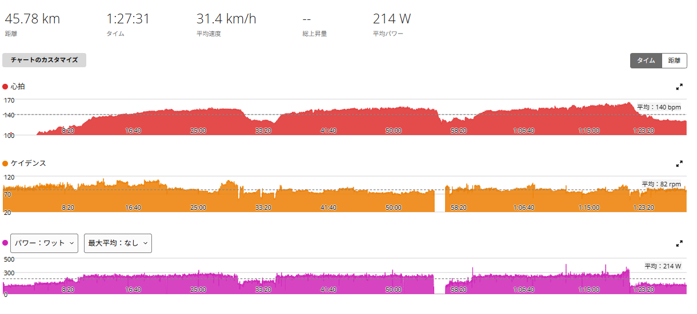

SST20分×3。相変わらず辛いが、息だけ少し楽だった気がする
今日は天気が悪かったのでローラー。メニューはSST20分×3である。FTP設定275Wに対して250W前後を20分、5分休んでまた20分、それを3本。
先週も同じメニューをやっているが、そのときは3本目の10分あたりで「もうやめようかな」と思うくらいきつかった。今日も楽だったわけではない。SSTは相変わらず辛い。ただ、終わってみると少し違う感覚もあった。

45.78km・NP231W・TSS102.5
- 全体45.78km / 1時間27分31秒 / 運動量1,124kJ / 運動負荷197
- 負荷平均214W / NP231W / IF0.840 / TSS102.5 / 20分最大252W
- 心拍・回転平均140bpm / 最大164bpm / 平均82rpm
- 効果有酸素TE4.1 / 無酸素TE0.0
ゾーンの中身はきれいにSSTの形をしている。心拍ゾーン5はゼロ。パワーもゾーン5以上は1分24秒しかない。その代わり心拍ゾーン3〜4に66分、パワーゾーン3〜4に58分入っている。上を叩きに行く日ではなく、真ん中を長く踏み続ける日だった。
250W → 247W → 252W。最後の20分が一番高かった
- 1本目20分01秒 / 250W / 心拍平均144bpm・最大154bpm / 91rpm
- 2本目20分01秒 / 247W / 心拍平均148bpm・最大156bpm / 76rpm
- 3本目20分01秒 / 252W / 心拍平均152bpm・最大164bpm / 81rpm
3本合計60分の平均はほぼ250W。FTP275Wに対して約91％なので、狙っていたSSTの強度にきれいに収まった。
きれいな右肩上がりではないが、個人的には最後の252Wが結構うれしい。2本目を終えた時点で40分SSTをやっている。そこから5分休んで、もう一度20分。その3本目が今日の最大20分平均だった。辛いことは辛い。ただ、出力そのものは最後まで崩れなかった。

過去の20分×3と並べてみる
ここは正直に書いておく。今日が過去最高だったわけではない。
- 8月18日244W → 240W → 246W（室温29.7℃）
- 8月30日255W → 254W → 256W（3本目10分でやめようかと思った日）
- 今日250W → 247W → 252W
8月18日よりは6W前後高い。だが8月30日には5W足りていない。つまり今日は、過去2回の20分×3のちょうど間に入る内容だった。
「前回より息が楽だった」という感覚も、この並びを見れば説明がついてしまう。単に5W低いから楽だっただけ、という可能性は普通にある。ここを都合よく解釈しないようにはしたい。
「楽になった」ではない。息が少し違っただけ
それでも今日いちばん気になったのは、いつもよりほんの少しだけ呼吸が楽だった気がする、という点である。気がする、くらいの話だ。
SSTが楽勝になったわけではない。心拍は1本目144bpm、2本目148bpm、3本目152bpmと素直に上がっていき、最後は164bpmまで行っている。身体はちゃんときつかった。
ただ、「脚は辛い。でも呼吸は前よりほんの少し余裕があるかもしれない」。そういう感覚だった。最近は外を走っていても身体の耐久値が少し上がっているような感覚がある。今回のSSTも、その延長なのかもしれない。
まだ「強くなった」と言い切れるものではない。ただ、同じメニューを繰り返しているからこそ、こういう小さな差には気付きやすい。記録しておけば、あとで本物かどうか判定できる。
ケイデンスは2本目から落ちた
3本のケイデンスは91rpm、76rpm、81rpm。1本目は普通に回しているが、2本目以降はやや低ケイデンスである。
最近、きつくなってくるとケイデンスを落としてトルクを掛ける走り方も使っている。これが正解なのかはまだ分からない。少なくとも今日は、その状態でも最後まで250W前後を維持できた。8月18日も3本目だけ77rpmまで落ちていたので、疲れると回転が落ちるのは今のところ毎回同じである。
週末はツール・ド・大那。テーパリングはしない
9月13日は「ツール・ド・大那」に参加する。DAINA71で約71km。ただし今回はレースではない。一緒に走るのもエンジョイ寄りのメンバーなので、70kmを全力で走る予定はない。グループでサイクリングを楽しむ日である。
なので、イベントに向けて今週の練習を落とすつもりもない。前日まで普段どおり練習して、当日は長めのサイクリングを楽しむ。距離は長いが、負荷としては先日の唐沢5本に近い日になると思っている。
250Wを「普通に処理できる出力」にする
今回のSST20分×3。辛かったことに変わりはない。でも250W前後で60分を揃えられたし、最後の20分が一番高かったし、ほんの少しだけ呼吸が楽に感じた。
目標にしている「ローラーで1時間300W」から見れば、まだ250Wである。それでも、いきなり300Wで1時間回せるようになるわけがない。250Wを普通に処理できるようにする。次は255W。その次は260W。そうやって「辛くて仕方ない出力」を「普通に処理できる出力」に少しずつ変えていく。
今日の250Wは、まだ普通とは言えない。相変わらず辛い。ただ、以前よりほんの少しだけその方向へ進んでいる気はした。
次に見るポイント
- 255Wで3本8月30日と同じ出力を、同じように完遂できるか。そこで息が楽なら本物
- 室温の記録ローラーの日は室温を残す。夏場との比較ができるようにする
- 3本目最後の20分が一番高い形を再現できるか。それとも今日がたまたまか
- ケイデンス疲れると70〜80rpmへ落ちるのは毎回同じ。落とさずに維持する日も試すか